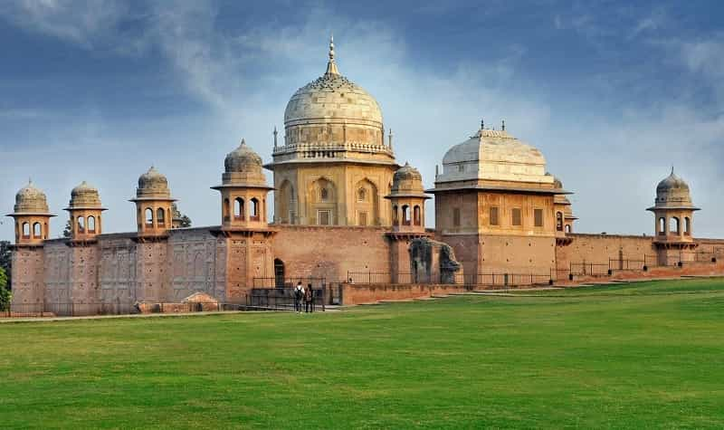

Brahma Sarovar
One of the largest man-made sacred water tanks in Asia, believed to be the spot where Lord Brahma performed a ritual to create the universe.

Jyotisar
The legendary site where Lord Krishna delivered the Bhagavad Gita to Arjuna, marked by an ancient banyan tree and lighted marble chariot sculpture.

Sheikh Chilli's Tomb
A beautiful example of Mughal architecture, this tomb complex houses the grave of the Sufi saint Sheikh Chilli and offers peaceful surroundings.

Karan ka Tila
According to beliefs, this mound was once the fort of King Karna, the famous hero of Mahabharata. According to the local people, it is believed that even today a lot of treasure is hidden under Karna's mound. From which King Karna used to donate.